Marlxton's collection of NFT's. Take a look, you might find something for yourself. The goal is to have fun and collect as many as possible.
INFLUENCER
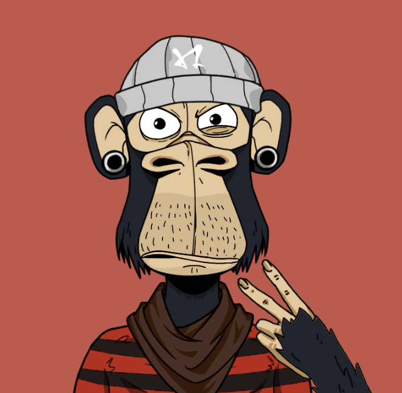Influencer is a special character. He dedicated his life to the lights of fame. Ever since he was a kid, his fantasy is that he will be famous. Not that he is doing very well, he lives with his mother in the basement and sells lemonade at a stand.
GRAFITKO
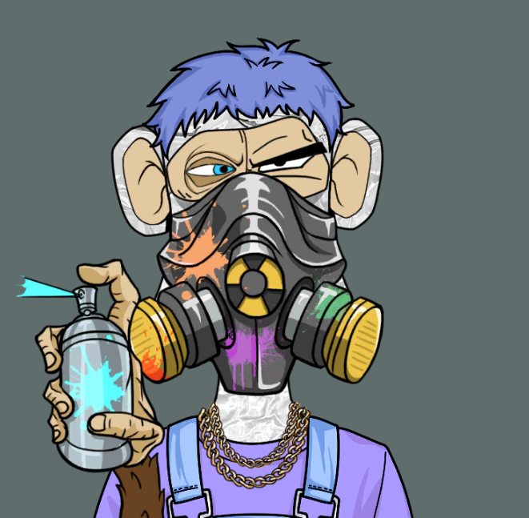In one word, Grafitko really likes graffiti on the walls. Ever since he was thrown out of his parent's house because he painted all the walls in the house, he lives under the bridge painting the pillars.
"Super" MARIO
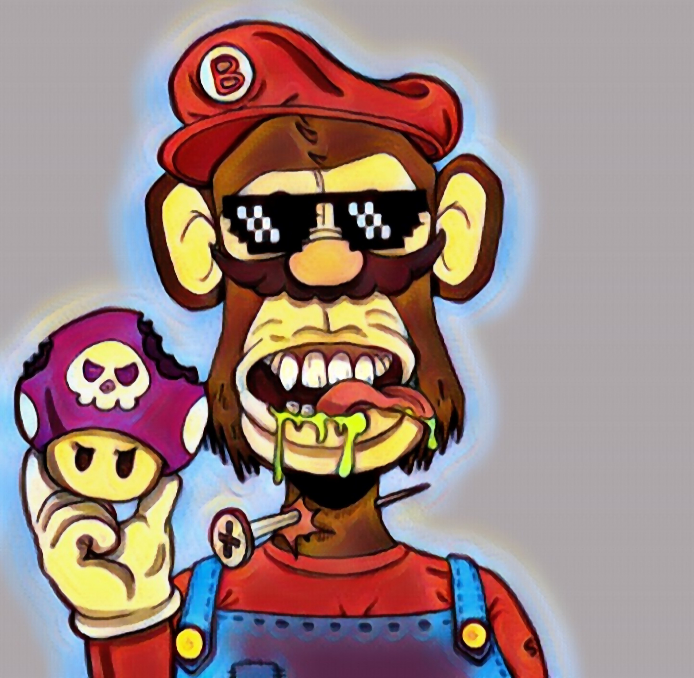He likes to be called super Mario, but he is anything but super. He steals vegetables from neighbor's gardens, he likes to eat mushrooms, mostly the crazy ones. The children in the neighborhood avoid him, he always talks nonsense.
NINJA
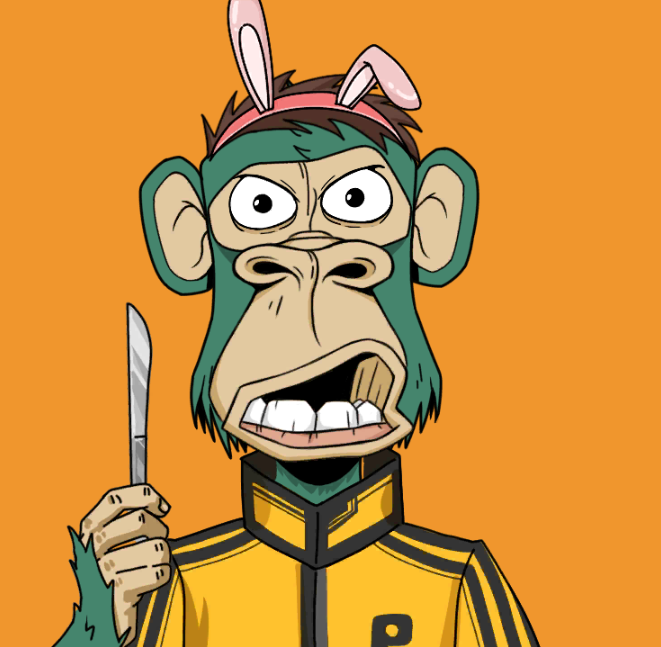He spreads butter on toast with a knife, wears rabbit ears on his head, sneaks around the corridors, he is a ninja. Legend has it that when he was little, his mother forgot him in Japan. There he was found by samurai and trained. He wanted to become a ninja turtle, but he's still a monkey, a ninja monkey.
ZEUS the DOG
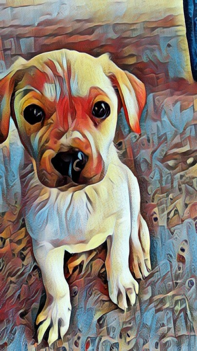Zeus is a big dog in the soul, small in the body. He radiates positive energy, lives to play and dig holes. No mole passes by him unnoticed. He likes to eat a lot, from real food to slippers, cloths and other things.
KIRVAJAŠ
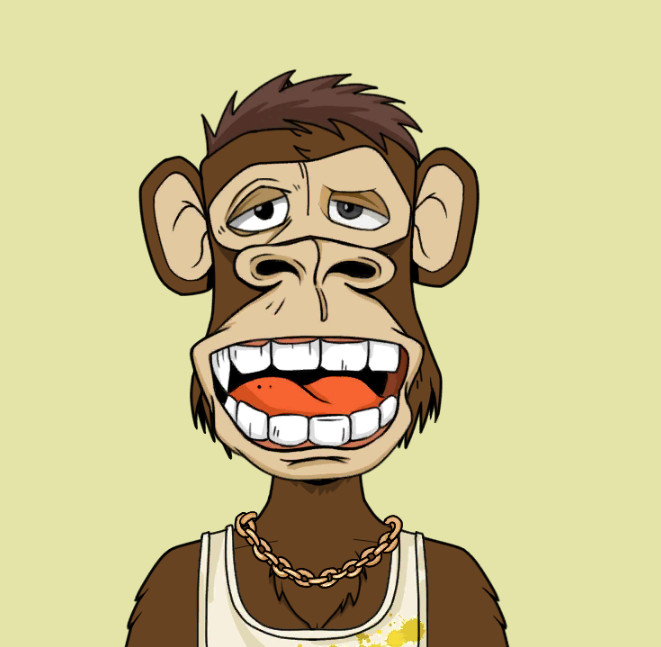Kirvajaš is a character who works in the amusement park. If necessary, he bakes burgers and kebabs, but his main interest is machine maintenance. Even though he has two left hands and doesn't know what key 13 is, his cousin runs the business, I don't have to tell you more. He likes everything that young people like.
PUNK GUY

His idol is Kurt Cobain. He doesn't miss concerts, he was at every one. You can always see him in the front row with a bottle of brandy waving his head. He finished three grades of primary school, most of his teeth are missing and women still love him. He's a punk guy.
MR. IVAN
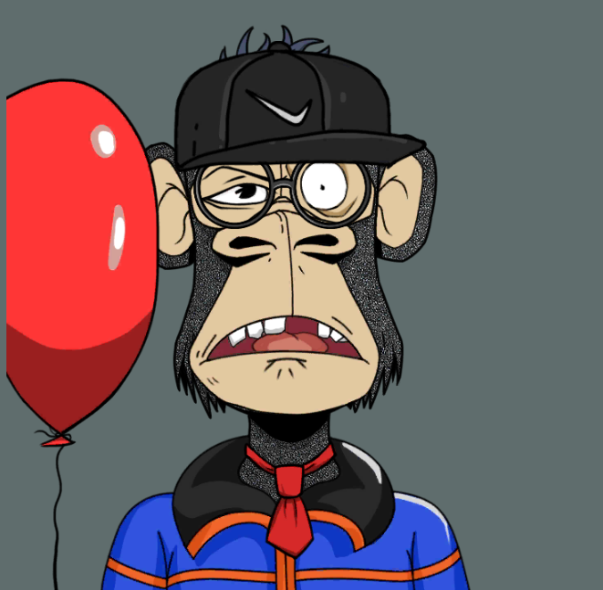They told him to get married and have children. He listened to them, now he regrets it. He works 12 hours a day without a day off in the week. He has to take the children to play every weekend while the wife goes for a manicure and a haircut. He says he was not born under a lucky star.
BAD BARBIE

Life is one, why not make the most of it. Barbie is a crazy monkey, she likes cheerful colors, lollipops, wigs on her head. Her heart was never broken, but she broke countless of them.
CAVEMAN
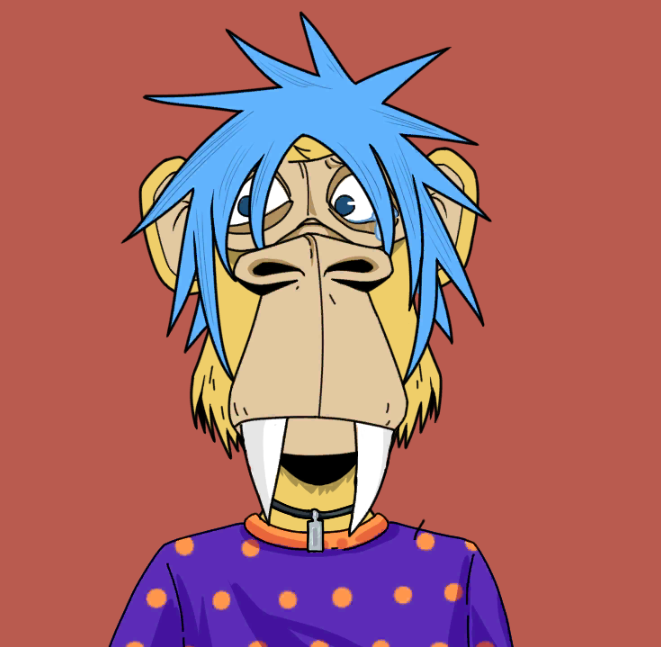He lives in a cave. Caveman likes to make various tools and weapons from stone and wood. He comes from a large family, there would be even more of them if there were no lions. He is not the best at hunting, so he likes to collect berries in the forest.
JOKER BOY
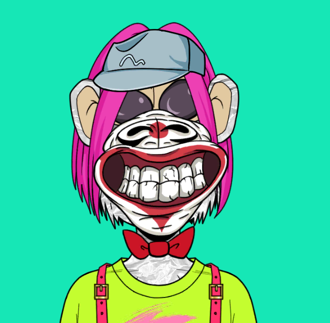His life is filled with laughter and jokes. His thoughts are a little dark, although he is always smiling, it is not because he is happy. His mother was on heroin while she was pregnant, so he was born an addict. He works in the local circus, he scares children.
DARK MONKEY

Ever since he watched Star Wars, he believes that he is the reincarnation of Dark Vader. His parents took him to a psychiatrist regularly, but there is no help for him. He especially goes crazy when the batteries in his sword run out and his mother doesn't give him money for new ones.
FITNESS MARK

Mark is in the gym from morning till night. Muscles are not important to him, he likes yoga and fast walking the most. He lives a healthy life, eats only healthy food, avoids alcohol, does not smoke or do drugs. Every mother would have him as a son-in-law if he had all the boards in his head.
HOLIDAY MAICK

Christmas, Easter, Kirvaj, anniversaries, his whole life is one big holiday. He doesn't have a job, nor has he ever had one. Grandma won a big jackpot when he was still a child and since then he doesn't have to worry about money. He lives to the fullest, his life motto is "live fast, die young, you don't care where and when".
MARIN
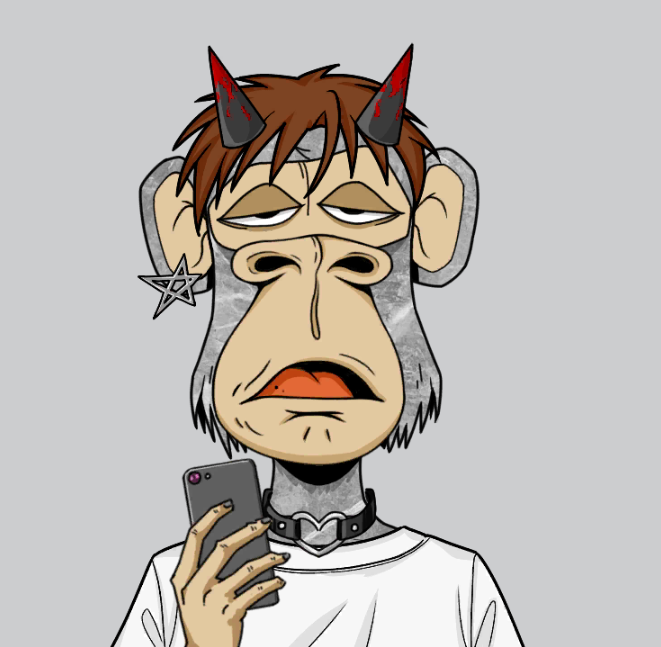Marin still doesn't know what he wants to be in life. He often experiments with different things. He is alone in the room most of the time. He charges his cell phone a couple of times a day, he's good at typing, the last thing he wanted was to be a recorder in court.
MARLIN
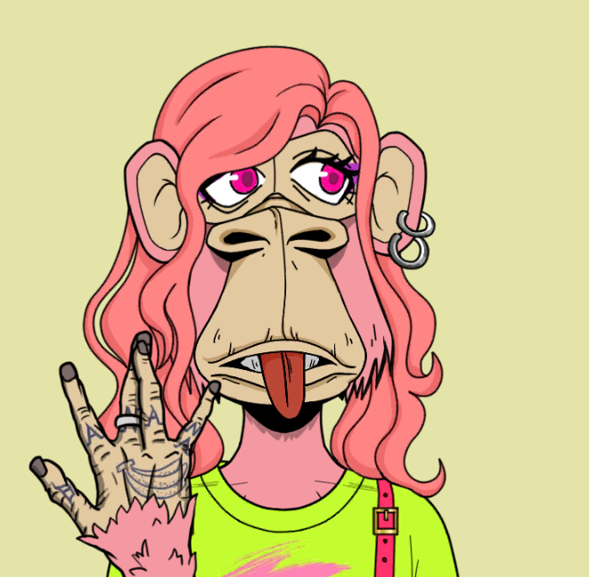Marlin is Marin's sister, younger sister. She listens to K pop and One direction, which often drives her brother crazy. She is a favorite in the team, she doesn't talk much, but when she does say something, it's not stupid. She really likes strawberry ice cream and dolls.
MR. GURU

Mr. Guru is a personal spiritual teacher. He dedicated his life to learning the secrets of spirituality. People love him and often want to spend time with him.
NENAD
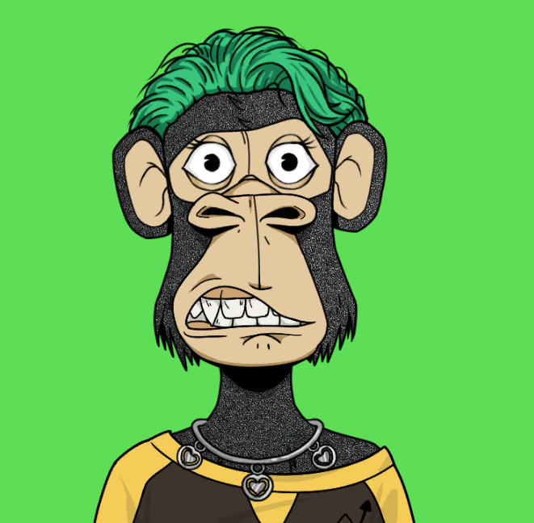Nenad lives on a farm. He grows bananas and coconuts. No one knows and it is a "secret", but Nenad also deals with forgery of documents, which brings him the biggest income. Most of the time, he is good and calm, but whoever steps on his bum doesn't wake up the next day.
ROBI
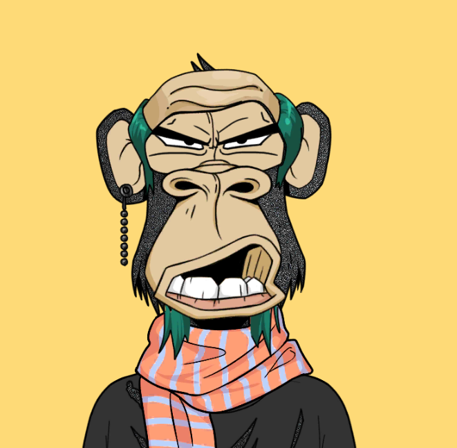Robi is an artist's soul, often a grumpy guy. He teaches music in high school and holds a painting workshop. He regrets becoming a teacher, the children annoy him a lot. He finds peace in a bottle of whiskey every day after work.
SLAVKO MENADŽER

He works in the music industry, deals with management and has collaborated with many famous people/monkeys. He does not own any real estate, Elon Musk is his idol. He is collecting money to go to Mars.